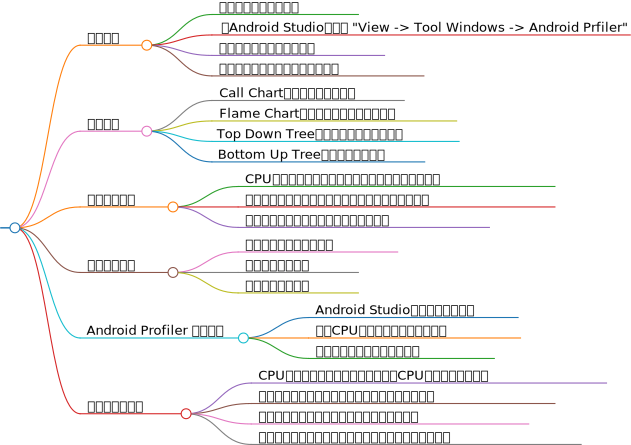

Android Studio Profiler 是一个强大的性能分析工具，它集成在 Android Studio 中，用于帮助开发者监控和优化应用的性能。Profiler 提供了实时的性能数据监测和分析，包括 CPU 使用情况、内存使用情况、网络活动和电池消耗等核心功能。通过这些功能，开发者可以获得应用运行时的详细性能指标，从而发现和解决性能问题，提高应用的质量和用户体验。
CPU Profiler 可以显示应用程序的实时 CPU 使用情况和线程的活动。它允许开发者选择模式方法追踪或基于样本的追踪，并记录特定时间段内的 CPU 使用情况。通过分析 CPU 使用情况，开发者可以找出哪些部分的代码占用了过多的 CPU 资源，并进行优化。
Memory Profiler 可以帮助开发者检测内存泄漏和其他内存问题。它允许开发者查看应用的内存分配和回收情况，以及垃圾回收事件。通过这些信息，开发者可以识别出哪些对象占用了大量内存，以及哪些对象导致了频繁的垃圾回收事件。
Network Profiler 展示了时间线上的实时网络活动，显示了发出和收到的数据和当前的网络连接数量。开发者可以通过网络分析来优化网络请求的频率和大小，从而提高应用的响应速度和减少不必要的网络流量。
Battery Profiling 可以帮助开发者了解应用对设备电池的影响。开发者可以查看应用的电量消耗情况，包括 CPU、屏幕、网络和位置服务等方面的电量消耗。通过这些信息，开发者可以发现应用程序的能耗瓶颈，并进行相应的优化。
在使用 Profiler 进行性能分析时，开发者应该关注应用程序的热点，即那些占用大量资源的部分。优化应用程序的热点代码可以显著提高应用程序的性能。此外，开发者可以使用多个设备进行测试，以发现应用程序的性能问题在不同设备上的差异。关注应用程序的电池消耗也很重要，优化应用程序的电池消耗可以延长设备的电池寿命，提高用户体验。
综上所述，Android Studio Profiler 是一个多功能的性能分析工具，它为开发者提供了丰富的数据和分析功能，帮助开发者优化应用性能，提升用户体验。
在Android Studio中开启Profiler的步骤如下：
打开Android Studio，并确保已经打开了你的项目。
在底部的工具栏中，找到并点击"Android Profiler"选项卡，它位于"Logcat"和"Device File Explorer"之间。
如果你想要进行高级分析，需要在运行配置中进行设置。点击"Run"菜单，选择"Edit Configurations"，在左侧的列表中选择"app"（或你的应用程序模块名称），在右侧的配置面板中，点击"Profiler"选项卡，将"Enable advanced profiling"复选框选中，点击"Apply"和"OK"按钮保存更改。
启动应用程序，并将运行环境设置为"Profile"。在Android Studio的工具栏中点击"Profiler"图标，Profiler工具窗口会显示应用程序的性能数据和内存使用情况。
点击"Start"按钮开始记录性能数据，在应用程序中执行相关操作，然后点击"Stop"按钮停止记录性能数据。
分析性能数据，查找性能瓶颈和内存泄漏等问题。
以上步骤基于最新的Android Studio版本，确保你的Android Studio是最新版本，以便能够使用所有最新的功能.
Android Studio Profiler是一个集成在Android Studio中的性能分析工具，它支持以下几种类型的性能分析：
CPU分析：通过CPU分析，开发者可以识别出哪些方法或函数占用了最多的CPU时间，从而优化代码以提高执行效率。
内存分析：内存分析有助于发现内存泄漏和其他内存使用问题。开发者可以查看堆转储、对象分配和内存使用趋势等信息。
网络分析：网络分析可以帮助开发者了解应用的网络性能，包括请求数量、传输的数据量和延迟等。
电池分析：电池分析可以帮助开发者了解应用的电池使用情况，包括哪些操作最耗电，从而优化代码以降低电池消耗。
这些分析类型可以单独使用，也可以组合使用，以全面评估应用的性能表现。通过这些分析，开发者可以更准确地识别和解决性能瓶颈，优化应用性能，提升用户体验。
Android Studio Profiler是一个强大的工具，它可以帮助开发者深入了解应用的性能表现，包括CPU、内存和网络使用情况。以下是如何解读Profiler收集到的性能数据的基本步骤：
在Android Studio中，通过点击View > Tool Windows > Android Profiler或使用工具栏中的Profiler按钮打开Profiler窗口。选择要分析的设备和应用进程。
Profiler窗口顶部显示了一个共享时间线视图，其中包含了CPU、内存和网络使用的实时图。这个视图还包括时间轴缩放控制按钮、跳转到实时更新的按钮，以及显示活动状态、用户输入事件和屏幕旋转事件的事件时间轴。
在Profiler的顶部菜单中选择“CPU”选项卡，这里会显示应用的CPU使用情况，包括每个线程的CPU使用率、方法调用堆栈等信息。通过CPU分析，可以查看应用的线程使用情况，如果某个线程的CPU使用率过高，可能存在性能瓶颈。
选择“Memory”选项卡，这里会显示应用的内存使用情况，包括总内存、已用内存、空闲内存等信息。点击“Heap Dump”按钮可以获取当前的堆快照，通过分析堆快照，可以查看哪些对象占用了最多的内存，以及是否存在内存泄漏。
在Profiler的顶部菜单中选择“Network”选项卡，这里会显示应用的网络使用情况，包括所有传输的文件的详情。
为了获得更详细的分析数据，可以在运行配置中启用高级分析。这要求在应用中插入监控逻辑，以便Profiler能够收集更详细的数据，如分配对象数量、垃圾回收事件等。
在分析数据时，注意观察峰值和趋势，这些通常指示着性能问题的所在。例如，CPU使用率的突然上升可能表明有计算密集型的任务正在执行，而内存使用量的持续增长可能意味着存在内存泄漏。
通过上述步骤，你可以有效地使用Android Studio Profiler来诊断和优化你的应用性能。记住，定期进行性能分析是确保应用流畅运行和提供良好用户体验的关键步骤。
使用方法
连接设备或启动模拟器
在Android Studio中选择 "View > Tool Windows > Android Profiler"
选择监测的设备和应用进程
使用不同维度的数据图表分析性能
数据图表
Call Chart：显示方法调用关系
Flame Chart：显示方法调用和执行时间
Top Down Tree：按层次结构显示调用栈
Bottom Up Tree：逆向构建调用栈
性能优化建议
CPU优化：减少计算、使用高效算法、合理管理线程
内存优化：及时释放资源、避免内存泄漏、使用缓存
网络优化：缓存常用数据、减少网络请求
实际案例分析
内存泄露问题诊断与解决
函数执行时间分析
网络请求性能分析
Android Profiler 工具概述
Android Studio内置性能分析工具
监控CPU、内存、网络和电池消耗
实时数据显示和历史记录分析
性能分析与优化
CPU性能分析：识别热点代码，优化CPU占用率高的代码块
内存性能分析：检测内存泄漏，优化内存使用效率
网络性能分析：监控网络请求，优化网络性能
电池性能分析：评估应用对设备电量的影响，优化能耗
